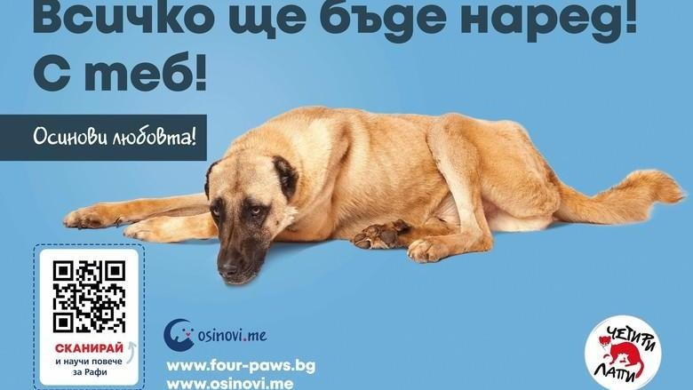

На много места по света надделява добрата практика да се осиновяват животни, вместо да се купуват и отглеждат скъпи породисти кучета, котки и др. От "Осиновители" подкрепяме тази тенденция и се стремим да я превърнем в традиция и в България! Благодарение на усилията ни и многобройните програми за кастрация и кампании за осиновявания, популацията на бездомни животни намалява в пъти през последните години. Ще продължаваме да работим в тази посока!
